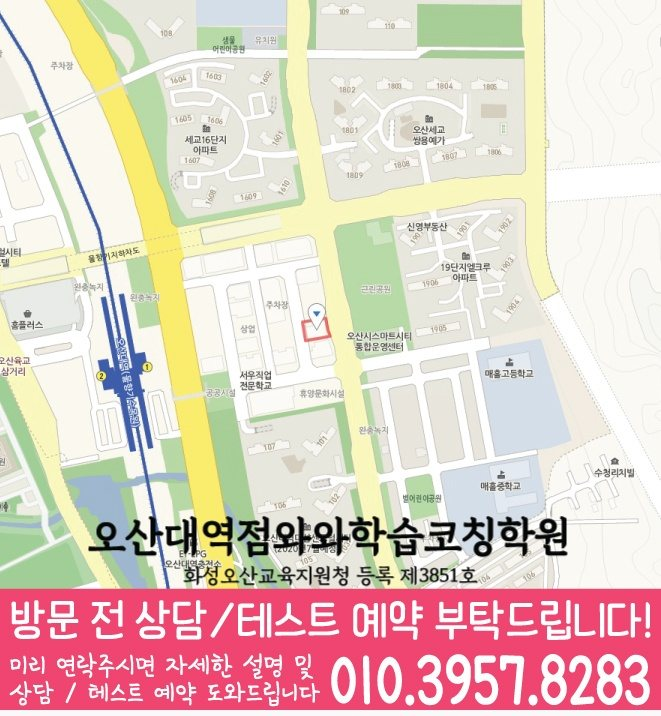

30초 핵심 안내
내삼미동 수학학원 선택 전 확인할 기준
내삼미동 수학학원에서는 내삼미동 초·중·고 학생의 학년 단계와 주간 수학 학습량과 점검 일정을 먼저 살펴봅니다. 센터 위치는 경기 오산시 내삼미로 85 우정프라자 2이며, 제공된 학교 참고 정보는 세미초·화성초·수청초·매홀중·세마중·문시중·대호중·매홀고·세교고·오산고·운천고·운암고이며 수업 시간·교습비·반 편성은 상담에서 다시 확인해야 합니다.
Math Learning Guide
내삼미동 수학학원 선택 전 초·중·고 학생의 학교 진도, 수학 상태, 주간 수학 학습량과 점검 일정, 통학과 상담 기준을 확인하세요.
30초 핵심 안내
내삼미동 수학학원에서는 내삼미동 초·중·고 학생의 학년 단계와 주간 수학 학습량과 점검 일정을 먼저 살펴봅니다. 센터 위치는 경기 오산시 내삼미로 85 우정프라자 2이며, 제공된 학교 참고 정보는 세미초·화성초·수청초·매홀중·세마중·문시중·대호중·매홀고·세교고·오산고·운천고·운암고이며 수업 시간·교습비·반 편성은 상담에서 다시 확인해야 합니다.
수업 안내 이미지

센터 위치 안내

이때, 경기 오산시 내삼미동에서 수학학원을 알아보는 출발점은 프로그램 이름이 아니라 학습자의 현재 풀이 행동입니다. 특히 이전 내용과 연결해야 할 때에 나타나는 행동을 공식 선택과 사용 근거에 관한 질문으로 바꾸면 상담 답변을 비교하기 쉬워집니다. 설명을 위해 ‘이전 내용과 연결해야 할 때, 공식을 사용한 뒤 결과가 문제 조건에 맞는지 확인하지 않는 학생’이라는 가상 고민 유형을 정했습니다. ‘학습점검표’는 학생의 관찰 가능한 행동, 확인 자료, 다음 점검 시점을 구체화할 상담 주제로 다룹니다. 내삼미동 안내 주소는 ‘경기 오산시 내삼미로 85 우정프라자 2’입니다. 확인된 정보만 정리하면, 내삼미동에서 방문을 준비할 때 통학 편의와 주변 환경은 안내된 주소 표기만 보고 평가할 수 없으며 방문 전에 보호자가 별도로 확인해야 합니다. 그 과정에서, 내삼미동에서 영어와 수학 과목을 함께 알아보더라도 현재 개설 여부와 학습 방식은 과목별로 나누어 직접 문의하세요. 이후의 기준은 결과를 약속하는 설명이 아니라 상담 전에 공식의 사용 조건을 살펴보고 선택 이유를 설명하는 과정에 관한 질문을 구체화하기 위한 정리입니다.
내삼미동 수학학원 선택에서 먼저 확인할 것은 학생이 실제로 다닐 수 있는 위치와 수업 대상입니다. 제공된 센터 위치는 경기 오산시 내삼미로 85 우정프라자 2입니다. 수학 가능 학년은 초1·초2·초3·초4·초5·초6·중1·중2·중3·고1·고2·고3입니다. 최종 시간표는 상담에서 다시 맞춥니다.
내삼미동 학교 학습과의 연결은 제공 목록인 세미초·화성초·수청초·매홀중·세마중·문시중·대호중·매홀고·세교고·오산고·운천고·운암고를 참고하되, 실제 수업 판단은 최근 시험 범위와 오답 유형을 중심으로 진행합니다. 제공되지 않은 학교나 생활권 정보는 임의로 추가하지 않았습니다.
와와학습코칭센터 오산대역점에 대해 제공된 등록 자료는 화성오산교육지원청 등록 제3851호입니다. 내삼미동 학생의 수학 계획은 이 기본 정보에 더해 최근 시험지와 오답 기록을 확인한 뒤 구체화합니다.
사실과 추정을 나눌 때, 내삼미동 페이지의 도입에서 정한 가상 고민 유형은 실제 학생 사례나 특정 학교 학생을 가리키지 않습니다. 이 유형은 결과나 성적이 아니라 문제 조건에 맞는 공식을 고르고 이유를 말하는 장면에서 살펴볼 수 있는 행동으로만 안내합니다. 막힌 최근 문제 하나를 골라 처음 한 행동, 공식의 사용 조건을 점검하고 선택 이유를 설명하는 과정에서 멈춘 이유, 답을 확인한 뒤 한 일을 순서대로 기록합니다. 이때, 이렇게 만든 가상 기록은 내삼미동에서 수학학원 상담을 할 때 필요한 학습 단계를 질문하는 자료로 사용할 수 있습니다.
또한, 문제 조건에 맞는 공식을 골라 근거를 설명하는 데 겪는 어려움을 알아볼 때는 최근 문항 한 개를 처음 읽은 순간부터 다시 따라가 봅니다. 자녀가 한 첫 표시, 사용한 개념, 식이나 설명이 끊긴 지점, 답을 본 뒤 한 행동을 순서대로 기록해 둡니다. 특히, 이 기록으로 특정 단원 전체를 부족하다고 결론 내리지는 않습니다. 여기서, 내삼미동에서 상담할 때 반복 여부를 어떤 방법으로 살피는지 확인하세요.
‘학습점검표’를 살펴볼 때는 추상적인 표현을 학생의 행동으로 바꾸어 묻는 것이 좋습니다. 우선, 내삼미동 상담에서 학습자가 스스로 시작하는지, 풀이 이유를 설명하는지, 틀린 문제를 다시 보는지처럼 관찰할 장면을 한두 가지 정합니다. ‘이전 내용과 연결해야 할 때, 공식을 사용한 뒤 결과가 문제 조건에 맞는지 확인하지 않는 학생’ 고민에 관한 학습 질문과 구분해, 그 행동을 어떤 자료와 시점으로 확인하는지, 점검 내용이 다음 계획에 어떻게 반영되는지도 상담 질문으로 준비합니다. ‘학습점검표’라는 표현을 검토할 때 좋은 결과를 전제로 삼기보다 현재 상태를 기록하고 다시 살필 수 있는 과정인지 확인합니다.
공식의 사용 조건을 확인하고 선택 이유를 설명하는 과정을 가정에서 점검할 때는 총 공부 시간보다 시작 시각, 첫 질문이 나온 지점, 답을 본 뒤 다시 시도한 행동을 관찰하는 편이 좋습니다. 하루마다 여러 행동을 확인하기보다 주 단위로 한 번 정해 둔 기준으로 확인해 단기 변화보다 되풀이되는 모습을 살펴봅니다. 또한, 이 기록은 학원을 평가하는 결과표가 아니라 내삼미동에서 상담할 때 학생의 현재 학습 상태를 과장 없이 전달하기 위한 준비 자료입니다.
이때, 내삼미동 정보를 정리할 때 지역·학교·주소를 하나의 근거처럼 묶어 해석하지 않는 것이 원칙입니다. 운영 여부를 단정하지 않으려면, 이 페이지가 다루는 지역은 ‘경기 오산시 내삼미동’이고, 주소는 찾아갈 위치를 확인하기 위한 표기입니다. 특히, 내삼미동 페이지에 적힌 ‘세미초’를 실제 재원 관계나 제휴의 근거로 해석하지 말고 학습 범위를 질문할 때만 사용합니다. 특히, 내삼미동 안내에 주변 주거 형태나 상권, 통학 거리는 제공되지 않았으므로 덧붙이지 않습니다.
‘이전 내용과 연결해야 할 때, 공식을 사용한 뒤 결과가 문제 조건에 맞는지 확인하지 않는 학생’이라는 가상 유형은 현재 이해 확인, 핵심 개념 설명, 짧은 예제, 독립 풀이, 오류 정리, 재확인의 순서로 살펴볼 수 있습니다. 또한, 여러 단원을 한꺼번에 바꾸지 말고 필요한 과정 하나와 완료 기준 하나를 먼저 정합니다. 재확인에서는 표현이 다른 문제에서도 사용 조건을 설명한 뒤 알맞은 공식을 선택하는지 살핀 뒤 이어 갈 범위를 고릅니다. 상담 답변에는 각 과정의 종료 기준을 상담 메모에 기록해 둡니다.
또한, 내삼미동 문의에는 학습 질문과 운영 질문을 분리해 가져가는 편이 좋습니다. 우선, 두 답변을 섞지 않으면 학생 적합성과 실제 조건을 각각 비교할 수 있습니다. 풀이 기록을 정리할 때, 답을 받지 못한 내용은 다음 연락 때 확인할 항목으로 표시하세요.
Information Basis
센터명·주소·등록번호·학교 참고 목록은 제공 자료 범위에서 확인했습니다. 실제 수업 가능 학년과 과목, 시간표는 상담 시점에 다시 확인해야 합니다.
FAQ
자녀가 먼저 떠올린 개념과 실제 풀이에 필요하다고 본 개념을 나란히 적은 문제를 준비하세요. 문의 항목을 나눌 때, 특정 단원 전체를 부족하다고 단정하지 말고 연결이 끊긴 지점을 어떻게 좁히는지 설명을 요청할 수 있습니다.
이때, 이 페이지의 내용만으로 사용 교재를 사실로 정할 수 없습니다. 교재 선정 기준, 학생 수준과의 연결, 문제 조건에 맞는 공식을 고르고 이유를 말하는 장면을 살피는 방법, 과제·오답 및 추가 자료와의 관계를 나누어 질문해 보세요.
‘학습점검표’는 확인할 학습 행동을 정하는 참고 소재이며 실제 운영이나 결과를 뜻하지 않습니다. ‘학습점검표’를 알아볼 때 표현을 관찰 가능한 행동으로 바꾸어 질문하세요. 내삼미동 상담 자리에서 학습자의 시작 방식, 문제를 푼 순서의 설명, 오답 재확인, 계획 반영을 어떤 자료와 시점으로 살피는지가 핵심입니다.
설명을 들을 때 확인된 운영 정보, 학습자의 어려움과 학습 방향이 맞는지 더 살필 내용, 아직 답이 없는 질문을 세 묶음으로 서로 분리하세요. 여기서, 첫 목표와 다음 점검 시점까지 구체적인지 확인하면 비교 근거를 남길 수 있습니다.
Parent Perspective
※ 내삼미동 학부모가 상담에서 확인할 상황을 재구성한 예시이며, 실제 수강 후기나 특정 성적 결과가 아닙니다.
다음 내용은 학습 고민을 설명하기 위한 가상 예시입니다. 실제 사례가 아닌 설명용 유형으로 ‘이전 내용과 연결해야 할 때, 공식을 사용한 뒤 결과가 문제 조건에 맞는지 확인하지 않는 학생’을 설정합니다. 내삼미동 문의 과정에서 이 가상 고민 유형을 설명하기 위해 학부모는 자녀가 고른 공식, 그 공식을 선택한 근거가 된 조건, 비슷한 공식과의 차이를 적은 문제 한 개를 준비합니다. 특히, 내삼미동 상담용 메모에는 학생이 떠올린 이전 개념과 실제로 필요했던 개념을 나란히 적습니다. 이전 내용과 연결해야 할 때에 학생이 ‘공식을 사용한 뒤 결과가 문제 조건에 맞는지 확인하지 않는’ 모습을 보인다는 가정 아래, 상담에서는 공식 암기와 조건에 맞는 선택을 구분할 기준, 계산 뒤 결과를 점검할 방법을 물어봅니다. 내삼미동 상담에서는 추가로 이전 내용이 필요한 문제에서 가져올 개념을 어떻게 고르는지도 확인해 둡니다. ‘학습점검표’에 관해서는 학생 행동을 어떤 자료와 시점으로 관찰하고 다음 계획에 어떻게 반영하는지도 함께 묻습니다. 학습점검표는 학생 행동을 확인할 질문으로만 사용하며 특정 지도 방식이나 결과를 가정하지 않습니다. 학습점검표 확인 질문까지 포함한 가상의 준비 과정일 뿐 실제 수업 운영이나 개선 결과를 보여 주는 사례가 아닙니다.